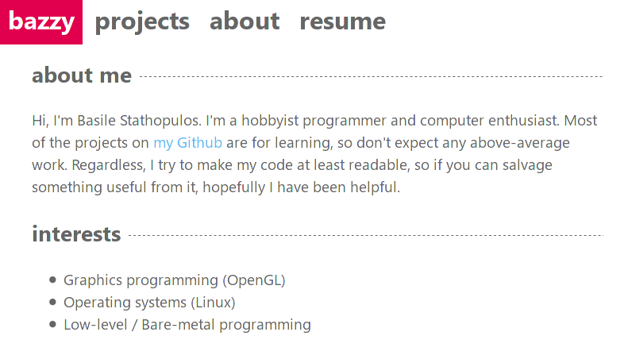
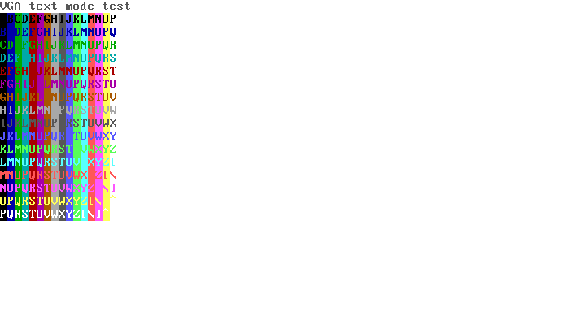
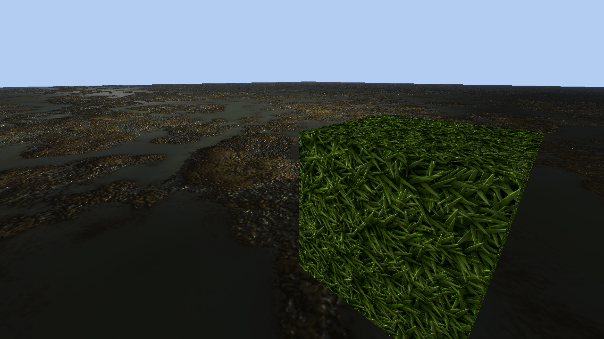
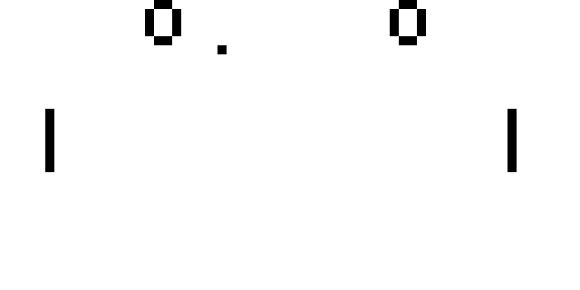

my projects
This is basically a mirror of my Github with some added fancy descriptions and screenshots of each project. You can also see some of my private projects here.
baszy.github.io
The source code for this website. Very simple layout, style and scripts.
bones
Basic operating system kernel with an ultra-light bootloader, VGA text mode graphics, and serial terminal support.
method
OpenGL 3D rasterizing renderer, with OBJ model loading and TGA texture loading, implementing the Phong shading model, plus diiffuse, specular, and normal mapping.
racket-chip-8
Emulator / interpreter for the CHIP-8 computer "architecture". Includes a RAM monitor, disassembly view, and more.